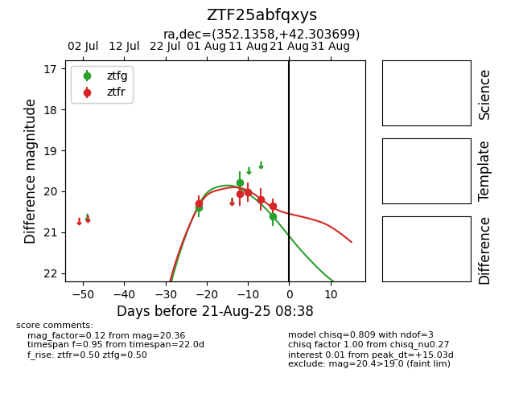

Target ZTF25abfqxys at 2025-08-21 08:38, see:
FINK: fink-portal.org/ZTF25abfqxys
Lasair: lasair-ztf.lsst.ac.uk/objects/ZTF25abfqxys
ALeRCE: alerce.online/object/ZTF25abfqxys
alt names
ZTF25abfqxys (ztf,alerce)
coordinates:
equatorial (ra, dec) = (352.1358,+42.30370)
galactic (l, b) = (106.9608,-17.98279)
photometry
last ztfg=20.62, ztfr=20.36
3 ztfg, 5 ztfr detections
